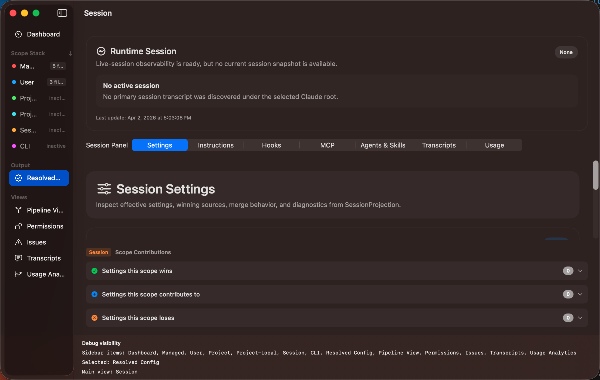

The Resolved Config view shows the final, merged result after all scopes have been layered together. This is what Claude Code actually uses when it runs. Open it from the Output section in the sidebar or press ⌘2.

The resolved view is organised into tabs:
CLAUDE.md content from all scopesEach resolved value shows which scope provided it. When a setting is overridden by a higher-precedence scope, the lower scope's value is still visible but shown as superseded. This makes it easy to understand why a setting has a particular value.